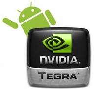
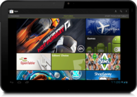
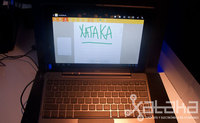
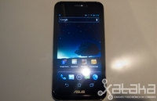
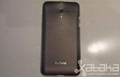
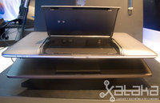

Wed, 07 Mar 2012 11:30:00 GMT
Nuevo iPad, síguelo en Xataka
Nuevo iPad, síguelo en Xataka
iPad 3 o iPad HD. No sabemos con seguridad cómo se llamará el nuevo tablet de Apple pero salvo catástrofe, el nuevo modelo se presenta hoy. También cobra especial fuerza la posibilidad de ver la renovación del Apple TV con soporte (por fin) para vídeo a 1080p y la esperada nueva resolución de tablet de Apple. A partir de las siete de la tarde estaremos contándote todos los detalles en nuestra página de directos y en Twitter. Y en cuanto sepamos qué nuevos productos son anunciados por Apple en su evento, podrás leer toda la información al completo en nuestra portada.
iPad 3 o iPad HD. No sabemos con seguridad cómo se llamará el nuevo tablet de Apple pero salvo catástrofe, el nuevo modelo se presenta hoy. También cobra especial fuerza la posibilidad de ver la renovación del Apple TV con soporte (por fin) para vídeo a 1080p y la esperada nueva resolución de tablet de Apple.
A partir de las siete de la tarde estaremos contándote todos los detalles en nuestra página de directos y en Twitter.
Y en cuanto sepamos qué nuevos productos son anunciados por Apple en su evento, podrás leer toda la información al completo en nuestra portada.

Wed, 07 Mar 2012 10:15:00 GMT
ZTE Mimosa X
ZTE Mimosa X
El ZTE Mimosa X es el terminal franquicia de la empresa china para este 2012 junto con el ZTE Era. El segundo queda incluido en la gama alta de smartphones mientras que el Mimosa X se conforma con la gama media. Este nuevo teléfono se olvida de los procesadores de cuatro núcleos y opta por asegurar con un Tegra 2 para mover Android 4.0, uno de los atractivos del ZTE Mimosa X junto a su pantalla con tamaño de 4.3 pulgadas.
ZTE Mimosa X, características A primera vista, el ZTE Mimosa X es un teléfono que podemos considerar como atractivo. Sus formas son redondeadas y las dimensiones están muy logradas, con un grosor en el límite de los 10 mm (9.9) y un peso de 110 gramos. Menos en la parte inferior, donde quedan ubicados los controles táctiles de Android, el cuerpo del Mimosa X lo ocupa su pantalla de 4.3 pulgadas de tipo capacitivo, multitáctil y con una resolución de 960×540 píxeles. El panel es un TFT clásico. Si lo miramos por detrás, encontramos la cámara de fotos de 8 megapíxeles, una mejora que han anunciado tras los primeros datos publicados antes del MWC 2012. Tendrá autoenfoque y flash LED, además del apoyo de una cámara secundaria de 0.3 megapíxeles. La principal es capaz de grabar vídeo a 1080p. Interior “made in Nvidia” El interior del ZTE Mimosa X corre completamente a cargo de Nvidia, que ha encontrado un buen aliado en la compañía. El chip que han elegido para este terminal que se moverá a caballo entre la gama media y la alta es un Tegra 2 a 1.2 Ghz acompañado por el módem Icera de Nvidia 450 HSPA+ y GPU GeForce. La memoria RAM será de 1 GB y como almacenamiento interno este nuevo teléfono podrá usar los 4 GB de su ROM, capacidad que podremos ampliar haciendo uso de tarjetas de memoria microSD de hasta 32 GB. En cuanto a la conectividad, estamos hablando de un teléfono que no apuesta todavía por la tecnología LTE y se queda en un HSPA a 7.2 y 5.76 Mbps. Sí que incluye WiFi n, DLNA, GPS, Bluetooth 2.1 y todos los sensores a los que ya estamos habituados en los smartphones actuales. Como datos extra decir que el Mimosa X lleva sonido Dolby, radio FM, HD Voice y doble micrófono para mejorar el sonido en las conversaciones. Por último hay que hablar de la batería, con capacidad de 1.650 mAh. Y como ya hemos adelantado, el sistema operativo será Android 4.0. de serie.
ZTE Mimosa X, precio y disponibilidad Englobado en la gama media, el ZTE Mimosa X llegará al mercado antes de verano, pero el precio oficial todavía no ha sido anunciado.

El ZTE Mimosa X es el terminal franquicia de la empresa china para este 2012 junto con el ZTE Era. El segundo queda incluido en la gama alta de smartphones mientras que el Mimosa X se conforma con la gama media.
Este nuevo teléfono se olvida de los procesadores de cuatro núcleos y opta por asegurar con un Tegra 2 para mover Android 4.0, uno de los atractivos del ZTE Mimosa X junto a su pantalla con tamaño de 4.3 pulgadas.
ZTE Mimosa X, características
A primera vista, el ZTE Mimosa X es un teléfono que podemos considerar como atractivo. Sus formas son redondeadas y las dimensiones están muy logradas, con un grosor en el límite de los 10 mm (9.9) y un peso de 110 gramos.
Menos en la parte inferior, donde quedan ubicados los controles táctiles de Android, el cuerpo del Mimosa X lo ocupa su pantalla de 4.3 pulgadas de tipo capacitivo, multitáctil y con una resolución de 960×540 píxeles. El panel es un TFT clásico.
Si lo miramos por detrás, encontramos la cámara de fotos de 8 megapíxeles, una mejora que han anunciado tras los primeros datos publicados antes del MWC 2012. Tendrá autoenfoque y flash LED, además del apoyo de una cámara secundaria de 0.3 megapíxeles. La principal es capaz de grabar vídeo a 1080p.
Interior “made in Nvidia”
El interior del ZTE Mimosa X corre completamente a cargo de Nvidia, que ha encontrado un buen aliado en la compañía. El chip que han elegido para este terminal que se moverá a caballo entre la gama media y la alta es un Tegra 2 a 1.2 Ghz acompañado por el módem Icera de Nvidia 450 HSPA+ y GPU GeForce.

La memoria RAM será de 1 GB y como almacenamiento interno este nuevo teléfono podrá usar los 4 GB de su ROM, capacidad que podremos ampliar haciendo uso de tarjetas de memoria microSD de hasta 32 GB.
En cuanto a la conectividad, estamos hablando de un teléfono que no apuesta todavía por la tecnología LTE y se queda en un HSPA a 7.2 y 5.76 Mbps. Sí que incluye WiFi n, DLNA, GPS, Bluetooth 2.1 y todos los sensores a los que ya estamos habituados en los smartphones actuales.
Como datos extra decir que el Mimosa X lleva sonido Dolby, radio FM, HD Voice y doble micrófono para mejorar el sonido en las conversaciones.
Por último hay que hablar de la batería, con capacidad de 1.650 mAh. Y como ya hemos adelantado, el sistema operativo será Android 4.0. de serie.
ZTE Mimosa X, precio y disponibilidad
Englobado en la gama media, el ZTE Mimosa X llegará al mercado antes de verano, pero el precio oficial todavía no ha sido anunciado.
Wed, 07 Mar 2012 08:30:00 GMT
Philips renueva su serie 3000 de televisores LCD de gama de entrada
Philips renueva su serie 3000 de televisores LCD de gama de entrada
Philips ya ha anunciado su nueva serie 3000 de televisores LCD, gama que podríamos considerar como de entrada de la compañía. A los modelos del año pasado, con diagonales más contenidas, se añaden nuevas opciones más acordes con los tamaños que el usuario demanda incluso para un televisor de gama de entrada. La nueva serie 3000 de televisores LCD de Philips se puede escoger con diagonales de 32, 37, 42 y 47 pulgadas. Cuentan con tecnología de 100 Hz PMR (Perfect Motion Rate), tres puertos HDMI y uno USB que permite la reproducción directa de contenido. Los altavoces integrados son de 10 W RMS cada uno (hay dos). El perfil bajo de esta gama queda enfatizado por la ausencia de conectividad a Internet. Si estás interesado en tener un modelo LCD de la nueva serie 3000 de Philips, estos nuevos modelos se ponen a la venta en el segundo trimestre de este año con un precio todavía sin fijar. Más información | Philips.

Philips ya ha anunciado su nueva serie 3000 de televisores LCD, gama que podríamos considerar como de entrada de la compañía. A los modelos del año pasado, con diagonales más contenidas, se añaden nuevas opciones más acordes con los tamaños que el usuario demanda incluso para un televisor de gama de entrada.
La nueva serie 3000 de televisores LCD de Philips se puede escoger con diagonales de 32, 37, 42 y 47 pulgadas. Cuentan con tecnología de 100 Hz PMR (Perfect Motion Rate), tres puertos HDMI y uno USB que permite la reproducción directa de contenido. Los altavoces integrados son de 10 W RMS cada uno (hay dos).

El perfil bajo de esta gama queda enfatizado por la ausencia de conectividad a Internet.
Si estás interesado en tener un modelo LCD de la nueva serie 3000 de Philips, estos nuevos modelos se ponen a la venta en el segundo trimestre de este año con un precio todavía sin fijar.
Más información | Philips.
Wed, 07 Mar 2012 05:10:10 GMT
LG Optimus L3
LG Optimus L3
La nueva saga de teléfonos móviles de LG tiene en el LG Optimus L3 a su modelo de la gama más baja, la de entrada. Es además el terminal que estrena la línea de diseño llamada L-Style. El LG Optimus L3 es un teléfono muy compacto con pantalla de 3.2 pulgadas y resolución QVGA, que adopta el formato ligeramente cuadrado de toda la nueva línea. Su objetivo es situarse bien posicionado en el catálogo de las operadoras y que se piense en él cuando un usuario pretende entrar en el mundo Android con un terminal de la compañía. LG Optimus L3, características Como hemos indicado, el LG Optimus L3 es un teléfono de características básicas que giran en torno a su diseño casi cuadrado con toques metálicos y con unas dimensiones de 102.6 × 61.6 x 11.7 mm. No hay datos del peso publicados por la marca. Para el tamaño de pantalla de este teléfono, de 3.2 pulgadas, nos parece que sus dimensiones son demasiado grandes, con mucho margen alrededor de la pantalla. Ésta no dispone de tecnología especial alguna en su panel y su resolución es muy ajustada: 320 × 240 píxeles. En línea con la pantalla está el procesador, un modelo de un solo núcleo a 800 MHz que se acompaña de 384 MB de memoria RAM, 150 MB para aplicaciones y 1 GB de memoria interna que podemos ampliar con tarjetas microSD gracias a la ranura de la que dispone. Con esos datos comprenderás que LG solo le haya otorgado el derecho a incluir Android 2.3 Gingerbread para su salida al mercado. Este teléfono es un HSDPA 3.6 Mbps que incluye WiFi, Bluetooth 2.1 y GPS. En cuanto a la batería, el dato de capacidad de 1.500 mAh nos gusta y promete que con la pantalla de reducidas dimensiones podamos mantener en funcionamiento el teléfono bastante tiempo. Por parte de la cámara de fotos, es una sencilla lente con sensor de 3 megapíxeles que solo cumple el trámite. LG Optimus L3, precio y disponibilidad LG ha anunciado que el nuevo Optimus L3 estará disponible en primer lugar en Europa a partir de este mismo mes de marzo. Lo que no han comunicado todavía es el precio libre con el que saldrá al mercado, dato que nos parece interesante conocer para darle el valor justo a este nuevo teléfono con Android. En tiendas donde ya se puede reservar se habla de un precio de 145 euros.

La nueva saga de teléfonos móviles de LG tiene en el LG Optimus L3 a su modelo de la gama más baja, la de entrada. Es además el terminal que estrena la línea de diseño llamada L-Style.
El LG Optimus L3 es un teléfono muy compacto con pantalla de 3.2 pulgadas y resolución QVGA, que adopta el formato ligeramente cuadrado de toda la nueva línea. Su objetivo es situarse bien posicionado en el catálogo de las operadoras y que se piense en él cuando un usuario pretende entrar en el mundo Android con un terminal de la compañía.
LG Optimus L3, características
Como hemos indicado, el LG Optimus L3 es un teléfono de características básicas que giran en torno a su diseño casi cuadrado con toques metálicos y con unas dimensiones de 102.6 × 61.6 x 11.7 mm. No hay datos del peso publicados por la marca.
Para el tamaño de pantalla de este teléfono, de 3.2 pulgadas, nos parece que sus dimensiones son demasiado grandes, con mucho margen alrededor de la pantalla. Ésta no dispone de tecnología especial alguna en su panel y su resolución es muy ajustada: 320 × 240 píxeles.

En línea con la pantalla está el procesador, un modelo de un solo núcleo a 800 MHz que se acompaña de 384 MB de memoria RAM, 150 MB para aplicaciones y 1 GB de memoria interna que podemos ampliar con tarjetas microSD gracias a la ranura de la que dispone.
Con esos datos comprenderás que LG solo le haya otorgado el derecho a incluir Android 2.3 Gingerbread para su salida al mercado.
Este teléfono es un HSDPA 3.6 Mbps que incluye WiFi, Bluetooth 2.1 y GPS.
En cuanto a la batería, el dato de capacidad de 1.500 mAh nos gusta y promete que con la pantalla de reducidas dimensiones podamos mantener en funcionamiento el teléfono bastante tiempo. Por parte de la cámara de fotos, es una sencilla lente con sensor de 3 megapíxeles que solo cumple el trámite.
LG Optimus L3, precio y disponibilidad
LG ha anunciado que el nuevo Optimus L3 estará disponible en primer lugar en Europa a partir de este mismo mes de marzo. Lo que no han comunicado todavía es el precio libre con el que saldrá al mercado, dato que nos parece interesante conocer para darle el valor justo a este nuevo teléfono con Android.
En tiendas donde ya se puede reservar se habla de un precio de 145 euros.
Tue, 06 Mar 2012 17:46:38 GMT
Google Play, la tienda de contenidos de Google
Google Play, la tienda de contenidos de Google
Google no quiere que nadie se pierda en los distintos servicios de contenidos de los que ya dispone y ha anunciado Google Play, un contenedor donde tienen cabida las aplicaciones del Android Market, la música de Google Music, los libros de Google Books y también su oferta de vídeo bajo demanda. Pero Google Play no es solo la nueva marca para todo el contenido que podemos comprar o disfrutar de la mano de Google. Es también la manera que Google tiene de decirnos que da igual dónde lo compremos, descarguemos o consumamos que ese contenido estará perfectamente sincronizado entre el navegador y los equipos con Android. La tienda de aplicaciones de Android es ahora todo un ecosistema que une las aplicaciones, juegos, libros, música y también vídeos. El servicio de música, por ejemplo, sigue manteniendo su oferta de almacenar gratis hasta 20.000 canciones. No cambian los servicios de forma individual sino que se integran y alteran su nombre a Google Play Movies, Google Play Books y Google Play Music, convirtiéndose en aplicaciones. La disponibilidad de cada servicio es la misma que anteriormente, por lo que por ejemplo los vídeos no son accesibles desde España. A continuación el vídeo de presentación del nuevo Google Play: Más información | Google Play.

Google no quiere que nadie se pierda en los distintos servicios de contenidos de los que ya dispone y ha anunciado Google Play, un contenedor donde tienen cabida las aplicaciones del Android Market, la música de Google Music, los libros de Google Books y también su oferta de vídeo bajo demanda.
Pero Google Play no es solo la nueva marca para todo el contenido que podemos comprar o disfrutar de la mano de Google. Es también la manera que Google tiene de decirnos que da igual dónde lo compremos, descarguemos o consumamos que ese contenido estará perfectamente sincronizado entre el navegador y los equipos con Android.
La tienda de aplicaciones de Android es ahora todo un ecosistema que une las aplicaciones, juegos, libros, música y también vídeos. El servicio de música, por ejemplo, sigue manteniendo su oferta de almacenar gratis hasta 20.000 canciones. No cambian los servicios de forma individual sino que se integran y alteran su nombre a Google Play Movies, Google Play Books y Google Play Music, convirtiéndose en aplicaciones.

La disponibilidad de cada servicio es la misma que anteriormente, por lo que por ejemplo los vídeos no son accesibles desde España.
A continuación el vídeo de presentación del nuevo Google Play:
Más información | Google Play.
Tue, 06 Mar 2012 16:30:00 GMT
"No queremos hacer un iPhone o Android killer", entrevista a Miguel Schneider de Telefónica I+D
"No queremos hacer un iPhone o Android killer", entrevista a Miguel Schneider de Telefónica I+D
Otro de los protagonistas importantes del MWC 2012 fue Telefónica. La alianza con Mozilla para el desarrollo del terminal Open Web Device fue su anuncio más importante por lo que puede suponer para la venta de terminales en mercados emergentes, el objetivo primero de esta aventura. Sobre la estructura de la plataforma, la entrategia que quiere seguir la compañía con este terminal y el know-how del concepto de terminal escrito en HTML5 discurre la entrevista en vídeo con Miguel Schneider, Division Manager de Telefónica I+D. La entrevista completa en vídeo la puedes ver a continuación: En Xataka | Entrevistas en vídeo.
%2010.48.56.jpg)
Otro de los protagonistas importantes del MWC 2012 fue Telefónica. La alianza con Mozilla para el desarrollo del terminal Open Web Device fue su anuncio más importante por lo que puede suponer para la venta de terminales en mercados emergentes, el objetivo primero de esta aventura.
Sobre la estructura de la plataforma, la entrategia que quiere seguir la compañía con este terminal y el know-how del concepto de terminal escrito en HTML5 discurre la entrevista en vídeo con Miguel Schneider, Division Manager de Telefónica I+D.
La entrevista completa en vídeo la puedes ver a continuación:
En Xataka | Entrevistas en vídeo.
Tue, 06 Mar 2012 15:35:00 GMT
BeoLab 12, nuevo altavoz de pared ultraplano
BeoLab 12, nuevo altavoz de pared ultraplano
Bang&Olufsen ha ampliado su ya extensa gama de altavoces Beolab con el número 12, un nuevo sistema de sonido de pared que aterriza en el mercado como uno de los más delgados. Y dicen que sin renunciar a la máxima calidad. El Beolab 12 es un altavoz plano de pared que incorpora la Acoustic Lens Technology de Bang & Olufsen con el objetivo de que las frecuencias altas se dispersen horizontalmente en un ángulo de 180 grados delante del altavoz. El diseño, obra de David Lewis, tiene forma de onda tridimensional, y es bastante compacto. Dentro esconde un altavoz de agudos de 0.75 pulgadas, uno de medios de 2 pulgadas y dos de graves CosCone planos de 6.5 pulgadas que están orientados hacia la pared. En la parte amplificadora nos encontramos con la tecnología ICEPower clase D con nuevo diseño. El nuevo BeoLab 12 ya está a la venta por 4.222 euros. Más información | Bang&Olufsen.

Bang&Olufsen ha ampliado su ya extensa gama de altavoces Beolab con el número 12, un nuevo sistema de sonido de pared que aterriza en el mercado como uno de los más delgados. Y dicen que sin renunciar a la máxima calidad.
El Beolab 12 es un altavoz plano de pared que incorpora la Acoustic Lens Technology de Bang & Olufsen con el objetivo de que las frecuencias altas se dispersen horizontalmente en un ángulo de 180 grados delante del altavoz.
El diseño, obra de David Lewis, tiene forma de onda tridimensional, y es bastante compacto. Dentro esconde un altavoz de agudos de 0.75 pulgadas, uno de medios de 2 pulgadas y dos de graves CosCone planos de 6.5 pulgadas que están orientados hacia la pared. En la parte amplificadora nos encontramos con la tecnología ICEPower clase D con nuevo diseño.
El nuevo BeoLab 12 ya está a la venta por 4.222 euros.
Más información | Bang&Olufsen.
Tue, 06 Mar 2012 12:51:00 GMT
El Netgear WN2500RP promete no dejar hueco sin WiFi
El Netgear WN2500RP promete no dejar hueco sin WiFi
Netgear, tras su presentación en el CES 2012, ya tiene a la venta su equipo de red para ampliar la cobertura de nuestra red Wifi usando la doble banda. El Netgear WN2500RP es un equipo que enlaza con nuestro router clásico (compatible con modelos de diferentes marcas de tipo a/b/g/n) y se encarga de ampliar la cobertura de la red WiFi buscando no dejar ningún hueco sin conectividad. Precisamente para ayudarnos a su mejor colocación, las luces LED del equipo no solo informan del estado de la red sino que con ellas podemos determinar cuál es la mejor posición del equipo para optimizar el alcance de la conexión. El Netgear WN2500RP viene con cuatro puertos Ethernet, tecnología Push ‘N’ Connect para una sencilla configuración y sistema FastLane para priorizar el tráfico según qué uso le demos a la red. Si te interesa, ya está a la venta por 80 dólares. Vía | Slashgear. Más información | Netgear.

Netgear, tras su presentación en el CES 2012, ya tiene a la venta su equipo de red para ampliar la cobertura de nuestra red Wifi usando la doble banda.
El Netgear WN2500RP es un equipo que enlaza con nuestro router clásico (compatible con modelos de diferentes marcas de tipo a/b/g/n) y se encarga de ampliar la cobertura de la red WiFi buscando no dejar ningún hueco sin conectividad.
Precisamente para ayudarnos a su mejor colocación, las luces LED del equipo no solo informan del estado de la red sino que con ellas podemos determinar cuál es la mejor posición del equipo para optimizar el alcance de la conexión.
El Netgear WN2500RP viene con cuatro puertos Ethernet, tecnología Push ‘N’ Connect para una sencilla configuración y sistema FastLane para priorizar el tráfico según qué uso le demos a la red.
Si te interesa, ya está a la venta por 80 dólares.
Vía | Slashgear.
Más información | Netgear.
Tue, 06 Mar 2012 12:00:00 GMT
iPad HD suena ya como nombre para el nuevo iPad
iPad HD suena ya como nombre para el nuevo iPad
Uno de los ejercicios previos a toda presentación de Apple en el mundillo tecnológico suele ser jugar a la quiniela del nombre del nuevo producto. ¿Renovación completa como para cambiar sustancialmente el nombre? ¿Ligeras modificaciones que se resuelven con una letra añadida? iPad HD es el nombre que más suena ahora mismo como posible denominación del próximo iPad de Apple, que te recordamos que estaremos cubriendo en directo mañana. Sobre lo que podemos esperar, nuestros compañeros de Applesfera les están dedicando todos sus esfuerzos y nos proponen un post con lo que se espera y lo que ellos esperan de este iPad 3 o iPad HD. Por cierto, en el apartado de rumores, lo último tiene como protagonista a la funda, que desde que se llama Smart Cover tiene un protagonismo especial. En el próximo iPad podría recubrir todo el tablet y protegerlo de verdad, no como el de ahora.
Uno de los ejercicios previos a toda presentación de Apple en el mundillo tecnológico suele ser jugar a la quiniela del nombre del nuevo producto. ¿Renovación completa como para cambiar sustancialmente el nombre? ¿Ligeras modificaciones que se resuelven con una letra añadida?
iPad HD es el nombre que más suena ahora mismo como posible denominación del próximo iPad de Apple, que te recordamos que estaremos cubriendo en directo mañana.
Sobre lo que podemos esperar, nuestros compañeros de Applesfera les están dedicando todos sus esfuerzos y nos proponen un post con lo que se espera y lo que ellos esperan de este iPad 3 o iPad HD.
Por cierto, en el apartado de rumores, lo último tiene como protagonista a la funda, que desde que se llama Smart Cover tiene un protagonismo especial. En el próximo iPad podría recubrir todo el tablet y protegerlo de verdad, no como el de ahora.
Tue, 06 Mar 2012 09:30:00 GMT
"La integración del smartphone con otros dispositivos es un valor añadido de Xperia", entrevista a Sandra López de Sony Mobile
"La integración del smartphone con otros dispositivos es un valor añadido de Xperia", entrevista a Sandra López de Sony Mobile
Seguimos con nuestras entrevistas en vídeo a los protagonistas del MWC 2012 con Sony. La compañía japonesa estrenaba división de móviles en solitario en esta feria y no ha pasado desapercibida con dos terminales como el Sony Xperia U y el Xperia P. Pero la conversación sobre el papel de Sony Mobile en el MWC 2012 que tenemos con Sandra López, directora de marketing de esta nueva división de la compañía japonesa, también recorre la idea de multipantalla de Sony, la tendencia imparable de la cámara de fotos como protagonista del teléfono móvil y el modelo de subvención de terminales que se prepara para el futuro. Puedes ver el vídeo completo de la entrevista a continuación. En Xataka | Entrevistas en vídeo.
%2010.31.31.jpg)
Seguimos con nuestras entrevistas en vídeo a los protagonistas del MWC 2012 con Sony. La compañía japonesa estrenaba división de móviles en solitario en esta feria y no ha pasado desapercibida con dos terminales como el Sony Xperia U y el Xperia P.
Pero la conversación sobre el papel de Sony Mobile en el MWC 2012 que tenemos con Sandra López, directora de marketing de esta nueva división de la compañía japonesa, también recorre la idea de multipantalla de Sony, la tendencia imparable de la cámara de fotos como protagonista del teléfono móvil y el modelo de subvención de terminales que se prepara para el futuro.
Puedes ver el vídeo completo de la entrevista a continuación.
En Xataka | Entrevistas en vídeo.
Tue, 06 Mar 2012 08:45:00 GMT
Asus Padfone. Toma de contacto
Asus Padfone. Toma de contacto
Uno de los protagonistas del pasado Mobile World Congress ha sido el Asus Padfone. Ya lo vimos durante el CES y en sus orígenes cuando sólo era un concepto que por aquel entonces sonaba muy lejano. Más teniendo en cuenta por aquel entonces la compañía taiwanesa se encontraba enfrascada con el Eee Pad Transformer. De aquel concepto han pasado varios meses y por fin es real. Durante el Mobile World Congress no sólo conocimos el terminal de forma oficial, también lo hemos visto en un pequeño vídeo y ahora, nos toca contaros nuestras primeras impresiones de uno de los dispositivos más singulares de esta edición del MWC. Asus Padfone, teléfono, tablet y netbook en el mismo dispositivo El año pasado cuando Asus presentó el Eee Pad Transformer abrió un camino muy interesante dentro del mercado de las tabletas. No estábamos ante un teclado sin más, de esto ya teníamos unos cuantos ejemplos antes, sino que intentaba ofrecer más: autonomía, conectividad y un trackpad. Además, las aplicaciones ayudaban a reforzar la propuesta de la taiwanesa. La fórmula le ha funcionado bien, dentro de lo que se puede entender como bien en el espectro de ventas de los tablets Android, y el concepto fue evolucionando con más potencia, Transformer Prime, y con más resolución, Pad Infinity. Bien, ahora Asus quiere crear la experiencia total e integrar tres dispositivos que utilizamos mucho en un todo en uno. La primera impresión que nos da el PadFone nos resulta familiar. Se mantienen muchas de las señas de identidad de los modelos anteriores. Un dispositivo continuista que nos recuerda a los anteriores Transformer. Mismo diseño, mismo teclado. Sin embargo, detrás de la pantalla nos encontramos con la pequeña puerta donde podemos introducir el teléfono móvil. Los acabados de la tableta son francamente buenos así como el mecanismo para introducir el móvil de Asus. Las piezas, mecánicas se abren sin dificultad y sin necesidad de repetir el movimiento hasta que móvil y tableta encajen debidamente. El teléfono también mantiene muchas de las claves de diseño de las tabletas. Es muy atractivo y la calidad de los materiales es bastante buena. Es un terminal ligero, 129 gramos y muy agradable al tacto. La pantalla, de 4,3 pulgadas y tecnología SuperAMOLED tiene un ángulo de visión bastante grande y se ve perfectamente. Aunque habrá que hacer la prueba en exteriores. La cámara, de 8 megapíxeles y una apertura mínima de f/2,2 cumple muy bien su cometido aunque, dadas las condiciones, no hemos podido probarla a fondo. En cuando al software nos encontramos con Ice Cream Sandwich y una ligera capaz de personalización que no empaña la experiencia Android. Los widgets y los añadidos, como el control de energía y conexiones, se integra perfectamente con Holo. Una vez conectamos el móvil a la tableta el Padfone nos permite continuar con la misma aplicación que estábamos usando en ese momento. Si estamos viendo el correo en ese momento veremos esa aplicación. La conexión es bastante rápida aunque no instantánea ya que no es sólo una señal de vídeo, estamos hablando de que tiene que adaptarse a otra resolución, reconocer la tableta, etc. El dock por su parte cumple la misma función que en los anteriores Transformer. Aportar un teclado QWERTY completo, de nuevo teclas tipo chiclet, más conectores y además autonomía. En total, según las pruebas realizadas por Asus el conjunto de las tres baterías es nueve veces la del teléfono. Más adelante con el análisis a fondo veremos si es así o no. Otro añadido de este PadFone es el stylus. Siguiendo el ejemplo de HTC con el Flyer y posteriormente de Samsung con el Note, Asus también apuesta por introducir un lápiz con diferentes niveles de presión. Para sacarle provecho disponemos de varias aplicaciones, entre ellas SuperNote que viene instalada por defecto. Además de escribir, este lápiz nos permite usarlo como manos libres. Una solución muy ingeniosa para resolver el problema de las llamadas cuando estamos usando el tablet. De momento no hay fecha para su lanzamiento en España. Globalmente llegará en el mes de abril, posiblemente a finales de ese mes. Su precio de momento es una incógnita pero teniendo en cuenta que estamos ante un teléfono, una tableta y un dock no será una cifra pequeña. Lo cual no significa que sea caro si tenemos en cuenta la relación calidad precio. Asus Padfone, conclusiones La primera toma de contacto con el Asus Padfone ha sido positiva. Introduce un concepto diferente pero en la línea en la que venía trabajando Asus. Los terminales, tableta y móvil, son de muy buena calidad aunque esperemos que los problemas de conectividad inalámbrica de los anteriores modelos les haya servido para aprender y no cometer los mismos errores. No obstante, todavía queda mucho por probar de forma exhaustiva. También queda por ver si la experiencia que nos ofrece en el día a día es lo suficientemente buena como para sustituir a otros dispositivos y convertir en un gadget indispensable. Sea lo que sea, nosotros os lo contaremos dentro de poco.

Uno de los protagonistas del pasado Mobile World Congress ha sido el Asus Padfone. Ya lo vimos durante el CES y en sus orígenes cuando sólo era un concepto que por aquel entonces sonaba muy lejano. Más teniendo en cuenta por aquel entonces la compañía taiwanesa se encontraba enfrascada con el Eee Pad Transformer.
De aquel concepto han pasado varios meses y por fin es real. Durante el Mobile World Congress no sólo conocimos el terminal de forma oficial, también lo hemos visto en un pequeño vídeo y ahora, nos toca contaros nuestras primeras impresiones de uno de los dispositivos más singulares de esta edición del MWC.
Asus Padfone, teléfono, tablet y netbook en el mismo dispositivo
El año pasado cuando Asus presentó el Eee Pad Transformer abrió un camino muy interesante dentro del mercado de las tabletas. No estábamos ante un teclado sin más, de esto ya teníamos unos cuantos ejemplos antes, sino que intentaba ofrecer más: autonomía, conectividad y un trackpad. Además, las aplicaciones ayudaban a reforzar la propuesta de la taiwanesa.

La fórmula le ha funcionado bien, dentro de lo que se puede entender como bien en el espectro de ventas de los tablets Android, y el concepto fue evolucionando con más potencia, Transformer Prime, y con más resolución, Pad Infinity. Bien, ahora Asus quiere crear la experiencia total e integrar tres dispositivos que utilizamos mucho en un todo en uno.
La primera impresión que nos da el PadFone nos resulta familiar. Se mantienen muchas de las señas de identidad de los modelos anteriores. Un dispositivo continuista que nos recuerda a los anteriores Transformer. Mismo diseño, mismo teclado. Sin embargo, detrás de la pantalla nos encontramos con la pequeña puerta donde podemos introducir el teléfono móvil.
Los acabados de la tableta son francamente buenos así como el mecanismo para introducir el móvil de Asus. Las piezas, mecánicas se abren sin dificultad y sin necesidad de repetir el movimiento hasta que móvil y tableta encajen debidamente.

El teléfono también mantiene muchas de las claves de diseño de las tabletas. Es muy atractivo y la calidad de los materiales es bastante buena. Es un terminal ligero, 129 gramos y muy agradable al tacto. La pantalla, de 4,3 pulgadas y tecnología SuperAMOLED tiene un ángulo de visión bastante grande y se ve perfectamente. Aunque habrá que hacer la prueba en exteriores.
La cámara, de 8 megapíxeles y una apertura mínima de f/2,2 cumple muy bien su cometido aunque, dadas las condiciones, no hemos podido probarla a fondo. En cuando al software nos encontramos con Ice Cream Sandwich y una ligera capaz de personalización que no empaña la experiencia Android. Los widgets y los añadidos, como el control de energía y conexiones, se integra perfectamente con Holo.
Una vez conectamos el móvil a la tableta el Padfone nos permite continuar con la misma aplicación que estábamos usando en ese momento. Si estamos viendo el correo en ese momento veremos esa aplicación. La conexión es bastante rápida aunque no instantánea ya que no es sólo una señal de vídeo, estamos hablando de que tiene que adaptarse a otra resolución, reconocer la tableta, etc.

El dock por su parte cumple la misma función que en los anteriores Transformer. Aportar un teclado QWERTY completo, de nuevo teclas tipo chiclet, más conectores y además autonomía. En total, según las pruebas realizadas por Asus el conjunto de las tres baterías es nueve veces la del teléfono. Más adelante con el análisis a fondo veremos si es así o no.
Otro añadido de este PadFone es el stylus. Siguiendo el ejemplo de HTC con el Flyer y posteriormente de Samsung con el Note, Asus también apuesta por introducir un lápiz con diferentes niveles de presión. Para sacarle provecho disponemos de varias aplicaciones, entre ellas SuperNote que viene instalada por defecto.

Además de escribir, este lápiz nos permite usarlo como manos libres. Una solución muy ingeniosa para resolver el problema de las llamadas cuando estamos usando el tablet.
De momento no hay fecha para su lanzamiento en España. Globalmente llegará en el mes de abril, posiblemente a finales de ese mes. Su precio de momento es una incógnita pero teniendo en cuenta que estamos ante un teléfono, una tableta y un dock no será una cifra pequeña. Lo cual no significa que sea caro si tenemos en cuenta la relación calidad precio.
Asus Padfone, conclusiones
La primera toma de contacto con el Asus Padfone ha sido positiva. Introduce un concepto diferente pero en la línea en la que venía trabajando Asus. Los terminales, tableta y móvil, son de muy buena calidad aunque esperemos que los problemas de conectividad inalámbrica de los anteriores modelos les haya servido para aprender y no cometer los mismos errores.
No obstante, todavía queda mucho por probar de forma exhaustiva. También queda por ver si la experiencia que nos ofrece en el día a día es lo suficientemente buena como para sustituir a otros dispositivos y convertir en un gadget indispensable. Sea lo que sea, nosotros os lo contaremos dentro de poco.
Tue, 06 Mar 2012 07:00:00 GMT
"Playbook 2.0 ha cambiado completamente la percepción de nuestro tablet", entrevista a Eduardo Fernández de RIM
"Playbook 2.0 ha cambiado completamente la percepción de nuestro tablet", entrevista a Eduardo Fernández de RIM
Sin novedades en el apartado hardware, RIM se presentó en el MWC 2012 con su renovado tablet Playbook y las cifras de ventas de smartphones de prepago como avales. En la siguiente entrevista en vídeo a los protagonistas del MWC pasado, Eduardo Fernández de RIM contestó a las preguntas de Xataka sobre el estado actual de la compañía, el mercado de los tablets y por supuesto el tema de la feria: el posible fin de las subvenciones en telefonía móvil. A continuación tienes la entrevista completa:
%2011.49.09.jpg)
Sin novedades en el apartado hardware, RIM se presentó en el MWC 2012 con su renovado tablet Playbook y las cifras de ventas de smartphones de prepago como avales.
En la siguiente entrevista en vídeo a los protagonistas del MWC pasado, Eduardo Fernández de RIM contestó a las preguntas de Xataka sobre el estado actual de la compañía, el mercado de los tablets y por supuesto el tema de la feria: el posible fin de las subvenciones en telefonía móvil.
A continuación tienes la entrevista completa:


%2013.05.26.jpg)
%2011.18.40.jpg)